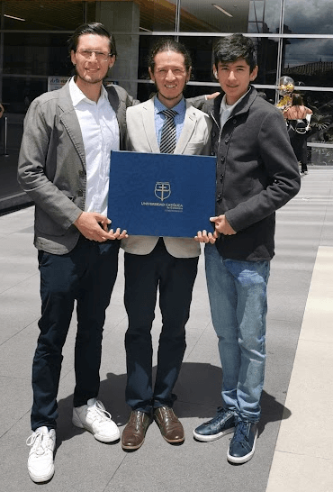

Sebastian Prieto Tovar
Civil Engineer / Frontend Developer
Civil Engineer / Frontend Developer
I was born in Bogota, Colombia on May 18th, 1995. I finished my high school studies at the Augustiniano Tagaste School in Bogota. I have always loved to play soccer and it was my childhood dream to be a professional soccer player. I was lucky enough to play for Lanus, an Argentinian soccer team, for a few months.

I came back to Colombia in August 2015, and started to think about studying at a University to obtain a professional degree. My journey started with a Civil Engineering career at the Catholic University of Colombia. I finished my studies in 2022 and obtained a Postgraduate in Project Management and Leadership from the Autonomous University of the state of Puebla, Mexico. This was accomplished remotely.
I currently live in Bogota, Colombia in a neighborhood called Pio XII. I live with my girlfriend Daniela. We have been together since 2019 but decided to move in together in 2021. My family has been a great support system throughout my life. My mother Pilar, my father Hector, my siblings Santiago and Samuel, my grandmother Piedad and my aunt Claudia. I am grateful they have been there for me through thick and thin.

I am currently focusing on continuing my education, and learning different subjects I really like, such as programming. I enjoy it so much that I started learning different programming languages, such as Python and JavaScript. I also plan on going abroad, and being able to go to Canada is a goal that my girlfriend and I have.